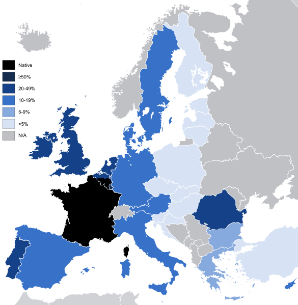

...As we know, French is the main language in France...
Introduction of French
French s a Romance language, belonging to the Indo-European family. It descended from the spoken Latin language of the Roman Empire, as did languages such as Italian, Portuguese, Spanish, Romanian, Catalan and others... >>> Is that all? <<<
Geographic distribution
Spoken by 12% of the EU population, French is the fourth most widely spoken mother tongue in the European Union, after German, English and Italian; it is also the third most widely known language of the Union, after English and German (33% of the EU population report to know how to speak English, whilst 22% of Europeans understand German and 20% French).Under the Constitution of France, French has been the official language of the Republic since 1992 (although the ordinance of Villers-Cotterêts made it mandatory for legal documents in 1539). France mandates the use of French in official government publications, public education except in specific cases (though these dispositions are often ignored) and legal contracts; advertisements must bear a translation of foreign words. In Belgium, French is the official language of Wallonia (excluding a part of the East Cantons, which are German-speaking) and one of the two official languages—along with Dutch—of the Brussels-Capital Region, where it is spoken by the majority of the population often as their primary language.French is one of the four official languages of Switzerland (along with German, Italian and Romansh) and is spoken in the western part of Switzerland called Romandie, of which Geneva is the largest city. The language divisions in Switzerland do not coincide with political subdivisions and some cantons have bilingual status for example, cities such Biel/Bienne or cantons such as Valais-Fribourg-Berne. French is the native language of about 20% of the Swiss population and is spoken by 50.4%of the population. >>> Is that all? <<<
Some Basic Examples in French
| English | French | Pronunciation |
|---|---|---|
| Yes/No | Oui/Non | wee/nong |
| Yes, please/No, thank you | Oui, s'il vous plaît/Non, merci | wee, seel voo play/nong, mair-see |
| You're welcome | Il n'y a pas de quoi | eel nyah pah der kwah |
| How are you? | Comment allez-vous? | kommahng tahlay voo |
| Excuse me | Excusez-moi | ex-kewzay mwah |
| Where? | Où? | oo |
| I want... | Je veux... | zher ver |
| OK/Agreed. | Ça va/d'accord. | sah vah/dah-korr |
The History of France
- Earliest Origins
- Old French (9th to 13th Centuries)
- Middle French (14th and 15th Centuries) and the Renaissance (16th Century)
- Modern French: 1600 to Today
- The French of the Grand Siècle and the Enlightenment
- The French Revolution (1789–1870)
- Contemporary French
- French and English: "Old Travelling Companions" >>> Is that all? <<<